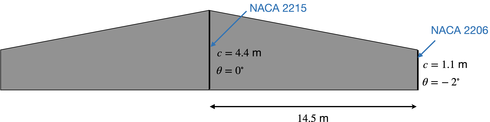

due 9/25/2024 before midnight via Learning Suite 25 possible points
Now that we can evaluate the aerodynamic performance of airfoils we can improve our drag estimation. For this analysis we will use the wing from the Douglas DC-3, a very successful plane that helped make air travel popular in the U.S. Some key specs, dimensions, and airfoil schedule are below (the below picture is simplified for the purposes of this homework both in number of airfoils and chord distribution).
| takeoff mass | 11,000 kg |
| cruise speed | 93 m/s |
| cruise altitude | 10,000 ft |

Start with the back-of-the-envelope drag methods. The drag breakdown in XFLR5 is separated into inviscid and viscous components (as opposed to lift-dependent and parasitic). Thus, when computing the induced drag use inviscid span efficiency (not Oswald efficiency). A typical (ideal) value is 0.98.
To get total viscous drag we need to first repeat the drag analysis from the last homework then add the viscous-lift-dependent part, which we can estimate as \({C_D}_{lift, viscous} = K {C_D}_p C_L^2\), where \({C_D}_p\) is the parasitic drag coefficient, and a typical value for \(K\) is 0.38. For parasitic drag, use a sweep of zero (the Mach number is low enough that the sweep angle wouldn’t make much difference in these calculations), and use an average airfoil thickness. Note that assuming fully turbulent flow is too conservative for a transport aircraft as we will get significant laminar flow. Computing the drag for partial laminar flow and partial turbulent is more complicated than we’ll worry about in this class (I derive how to do it in the appendix of the book). For simplicity in this case, just compute fully turbulent than multiply by 0.8 to account for the laminar flow reduction. The drag is pretty sensitive to how much laminar flow you can get, which is why aircraft designers work hard to extend the laminar flow region even a few percent.
Now use XFLR5 to more accurately compute drag using airfoil and lift distribution information. The most helpful overview videos from the official set are 2, 6–8. We don’t need to do any of the inertial properties as shown in video 7 (but will in a future homework). Instead, for the analysis we are doing in this homework we can just enter the mass as a lump sum later in ``define an analysis’’.
Airfoils: you need to do the airfoil batch analysis before you can do the wing analysis. Type 1. Make sure to run a wide range of angles of attack and Reynolds numbers.
Wing: For Polar Type I prefer type 2 in this case, but you could do type 1. Either way you’ll have to iterate on angle of attack. Either to find the right speed for a fixed lift (when running type 2), or to find the right lift for a fixed speed (when running type 1). Select VLM1 as the Analysis type. Make sure to choose a viscous option. Enter the mass under inertia, and set your atmospheric properties. When iterating on angle of attack it’ll be helpful to run coarse at first (say every degree or two), then narrow it down and run a finer resolution (like every 0.1 degrees).
Report the inviscid induced drag (ICD in XFLR5, you’ll need to unnormalize), and viscous drag (VCD, this also includes viscous lift-dependent drag). Compare to your estimates from part 1.